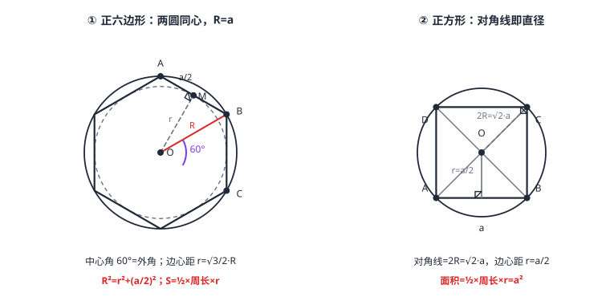

正多边形与圆
正多边形（各边相等、各角相等，m2-03-01）与圆是天生一对：各顶点等距于一个中心，落在外接圆上；各边等距于同一中心，与内切圆相切——两圆同心，公共圆心叫中心。中心角 =\tfrac360^\circn（恰是外角），半径 R、边心距 r、半边 \tfraca2 构成直角三角形：R^2=r^2+(a/2)^2；面积 =\tfrac12×周长× r。正六边形有特例福利：R=a。
| 所属主题 | 圆 |
|---|---|
| 所属模块 | 几何 |
| 课标学段 | 第四学段（7~9 年级） |
| 前置知识 | 多边形与内角和、圆心角、弧与圆周角定理、点、直线与圆的位置关系 |
| 核心素养 | 几何直观推理能力运算能力 |
教材定位
人民教育出版社《人教版（2024版）义务教育教科书·数学》
九年级上册第30章 直线与圆的位置关系30.3 正多边形与圆
对应九上 30.3：正多边形的外接圆、内切圆、中心角与边心距。
说明
每个正多边形都嵌着一对同心的圆：把正 n 边形的顶点连起来前，它们本来就均匀分布在「外接圆」上——顶点到中心的距离都是 R（外接圆半径）；同时每条边都与「内切圆」（切线的判定与切线长定理 的概念）相切——中心到每边的距离都是 r（边心距，内切圆半径）。两圆圆心是同一点，叫正多边形的中心。
中心角：相邻两顶点对中心的张角，\tfrac360^\circn 个顶点均匀分圆，每个分 \tfrac360^\circn——数值上恰等于正多边形的外角（多边形与内角和 的「走一圈」：绕中心转 \tfrac360^\circn 恰好转到下一个顶点）。
计算铁三角：连中心与一个顶点、再从中心向对边（该顶点所在的边）作垂线，得到直角三角形——斜边 R、一直角边 r、另一直角边 \tfraca2（半边），R^2=r^2+(\tfraca2)^2（勾股，直角三角形与勾股定理）。面积：正 n 边形被半径拆成 n 个全等的等腰三角形，每个面积 \tfrac12 a r，总面积 S=\tfrac12×周长× r。正六边形特例：中心角 60^\circ，n 个三角形都是等边三角形，R=a。
使用场景
螺母与扳手：六角螺母的对边距（扳手口径）=2r，对角距 =2R——图纸标一个尺寸，另一个靠 R^2=r^2+(a/2)^2 换算（例 1）。
徽章与镶嵌：圆形吊坠里嵌正方形徽章、正三角形花窗格——「内嵌外接圆」是设计里定尺寸、留边距的标准几何（例 2）。
注意点
中心角不是内角：正六边形中心角 60^\circ、内角 120^\circ；中心角 =\tfrac360^\circn（外角），内角 =180^\circ-\tfrac360^\circn。两者互补，别抄错。
边心距 r 与半径 R 别混用：r 是中心到边的距离（内切圆半径），R 是中心到顶点的距离（外接圆半径），只有面积公式 \tfrac12周长× r 用 r，直角三角形里斜边才是 R。
R=a 只属于正六边形：它来自中心角恰为 60^\circ 的等边三角形拆分；正三角形、正方形等不成立（正三角形 R=\tfraca\sqrt3，正方形 R=\tfraca\sqrt2）。
「正多边形的外接圆」与「正多边形的内切圆」方向别反：外接圆在外面套住顶点，内切圆在里面贴住边——「外」「内」说的是圆相对多边形的位置。
证明

图 1：左——正六边形：中心角 60°，半径 R（到顶点）、边心距 r（到边）、半边 a/2 构成直角三角形，此时 R=a；右——正方形即正四边形：对角线是外接圆直径 2R=√2·a，边心距 r=a/2
证明
结论 1正 n 边形有外接圆，圆心是相邻两边垂直平分线的交点；绕圆心旋转 \tfrac360^\circn 图形与自身重合，中心角为 \tfrac360^\circn。
设 O 是正 n 边形两条相邻边垂直平分线的交点。由各边相等，O 到这条边的两个端点等距（垂直平分线性质，尺规作图），再由各角相等可以推出 O 到所有顶点等距（等距的传递沿对称链完成）——全部顶点落在以 O 为圆心、R 为半径的圆上。换个视角：绕 O 旋转 \tfrac360^\circn，每条边、每个角换到下一个位置，图形与自身重合——旋转对称保证了「均匀分布」，中心角必为 \tfrac360^\circn（图 1 左）。
关键一步依据是垂直平分线的性质（尺规作图）与旋转对称：各边相等，所以圆心到每个顶点的距离沿相邻边逐步传递相等，各角相等保证传递不断档，于是全部顶点落在以该点为圆心的同一个圆上；而绕圆心转 \tfrac360^\circn 图形与自身重合，说明各边把整周 360^\circ 均分，中心角只能是 \tfrac360^\circn。
结论 2正 n 边形有内切圆，边心距 OM=r，且 R^2=r^2+(\tfraca2)^2。
连 OA、OB（相邻顶点），\triangle OAB 是等腰三角形（OA=OB=R）。从 O 向底边 AB 作垂线段 OM，由三线合一（等腰三角形与等边三角形）：M 是 AB 中点（AM=\tfraca2）、\angle AOM 平分中心角。以 OM=r 为半径作圆，与每条边都相切（垂足恰为切点，圆心到直线距离 =r，点、直线与圆的位置关系/04）——这就是内切圆，OM 即边心距。于是在 Rt\triangle OAM 中：R^2=r^2+(\tfraca2)^2。
关键一步依据是等腰三角形三线合一（等腰三角形与等边三角形）与「圆心到直线的距离等于半径时直线与圆相切」（点、直线与圆的位置关系/04）：连相邻两顶点得 OA=OB=R，底边上的高 OM 同时是中线（AM=\tfraca2）与顶角平分线；各边到圆心 O 的距离都等于 r，以 r 为半径的圆与每条边都相切，垂足就是切点。于是在直角三角形 OAM 中用勾股定理（直角三角形与勾股定理）得 R^2=r^2+(\tfraca2)^2。
结论 3正 n 边形的面积 S=\tfrac12×周长× r，其中 r 是边心距。
中心把正 n 边形拆成 n 个全等等腰三角形（旋转对称），每个面积 \tfrac12× a× r（底 a、高 r）。总和 S=\tfrac12 n a r=\tfrac12×周长× r。它与扇形面积 \tfrac12 lR（弧长、扇形面积与圆锥）共享同一个形象：把边（或弧）拉直当底、中心距离当高。
关键一步依据是旋转对称保证的分割：中心把正 n 边形分成 n 个全等的等腰三角形，每个以边 a 为底、边心距 r 为高，面积 \tfrac12× a× r，n 个相加即 S=\tfrac12 n a r=\tfrac12×周长× r。它与扇形面积 \tfrac12 lR（弧长、扇形面积与圆锥）是同一个形象：把边（或弧）拉直当底、中心到边的距离当高。
结论 4正六边形的边长等于外接圆半径，即 a=R。
中心角 60^\circ，等腰三角形顶角 60^\circ 且两腰 R 相等——顶角 60^\circ 的等腰三角形底角也各 60^\circ，是等边三角形，所以 a=R。六个等边三角形拼出正六边形（图 1 左），这解释了「圆规取半径沿圆周截六段恰好闭合」的经典作图。
关键一步依据是等腰三角形的底角相等与三角形内角和：中心角 60^\circ 的等腰三角形两底角也各是 60^\circ，三角全等故三边相等，a=R。六个这样的等边三角形正好拼成正六边形，说明「圆规取半径沿圆周截六段恰好闭合」不是巧合，而是 60^\circ 中心角与等边三角形的必然结果。
动手实验
画一个圆，圆规保持半径不变，从圆上任一点开始沿圆周连续截弧——六段后恰好回到起点，六 个截点连成正六边形（R=a 的亲手验证）。再用直尺量中心到边的距离（边心距）与中心到顶点的距离（半径），代入 R^2=r^2+(a/2)^2 核对（正六边形 a=6 时应有 r\approx 5.2）。
解题思路
正多边形计算三步曲：①中心角 \tfrac360^\circn（顺便得内角 180^\circ-\tfrac360^\circn）；②「半径—边心距—半边」直角三角形，知二求一；③面积 \tfrac12×周长× r。
正六边形走捷径：R=a，周长 6R、对边距 2r=\sqrt3 R、面积 \tfrac3\sqrt32R^2——三件套直接背条件反射（由等边三角形高 \tfrac\sqrt32R 推出）。
正方形与正三角形回收旧账：正方形对角线是外接圆直径（2R=\sqrt2 a，矩形、菱形、正方形）；正三角形 R=\tfrac23h、r=\tfrac13h（重心三等分三条中线，等边三角形的高即中线）。
「圆内嵌正 n 边形」问题先画铁三角再列式：题目给的量（直径、对边距、周长）翻译成 R、r、a 中的两个，进直角三角形解第三个（例 2）。
按场景的例题
例 1（场景：测量与工程） 六角螺母扳手口径
六角螺母外接圆半径 6 毫米（顶点在圆上）。求边长、对边距离（扳手口径）、边心距与螺母横截面面积（\sqrt3\approx 1.73）。
解：正六边形 R=a=6（毫米），周长 36。边心距 r=\tfrac\sqrt32R=3\sqrt3\approx 5.2（毫米），对边距 2r\approx 10.4（毫米）。面积 S=\tfrac12× 36× 3\sqrt3=54\sqrt3\approx 93.5（平方毫米）。
答：边长 6 毫米，对边距 6\sqrt3\approx 10.4 毫米，边心距 3\sqrt3\approx 5.2 毫米，面积 54\sqrt3\approx 93.5 平方毫米。
例 2（场景：图形设计） 圆形吊坠嵌方形徽章
直径 8 厘米的圆形吊坠，要嵌一枚最大的正方形徽章（四个顶点都在吊坠边缘）。求徽章边长、边心距与剩余圆环面积（π\approx 3.14，结果保留根号或两位小数）。
解：最大正方形即内接正方形：对角线 = 直径 =8，2R=8\Rightarrow R=4。边长 a=\tfrac8\sqrt2=4\sqrt2\approx 5.66（厘米）。边心距 r=\tfraca2=2\sqrt2\approx 2.83（厘米）（正方形中心到边是半边）。核验铁三角：r^2+(a/2)^2=8+8=16=R^2。剩余面积 =16π-(4\sqrt2)^2=16π-32\approx 18.24（平方厘米）。
答：边长 4\sqrt2\approx 5.66 厘米，边心距 2\sqrt2\approx 2.83 厘米，剩余面积 16π-32\approx 18.24 平方厘米。
例 3（场景：竞技与游戏） 三角风筝骨架嵌圆环
边长 6 分米的正三角形风筝面，要在三个顶点处固定一个圆环框架（顶点都在环上）。求环的半径（外接圆半径）、边心距（内切圆半径）与风筝面面积。
解：正三角形高 h=\tfrac\sqrt32× 6=3\sqrt3\approx 5.2（分米）。外接圆半径 R=\tfrac23h=2\sqrt3\approx 3.46（分米），边心距 r=\tfrac13h=\sqrt3\approx 1.73（分米）。核验铁三角：r^2+(a/2)^2=3+9=12=R^2。面积 S=\tfrac12× 18× \sqrt3=9\sqrt3\approx 15.6（平方分米）（与公式 \tfrac\sqrt34a^2=9\sqrt3 一致）。
答：外接圆半径 2\sqrt3\approx 3.46 分米，边心距 \sqrt3\approx 1.73 分米，面积 9\sqrt3\approx 15.6 平方分米。
常用推论
内角公式两家等价：内角 =180^\circ-\tfrac360^\circn 与 \tfrac(n-2)× 180^\circn（多边形与内角和 拆三角形版）代数上恒等——圆心分圆版与拆三角形版互为印证：180-\tfrac360n=\tfrac180n-360n=\tfrac180(n-2)n。
同边数的正多边形形状相同、仅大小不同：边数 n 锁定全部角度（中心角、内角），边长只定规模——两个正五边形的任何对应线段（边、半径、边心距、对角线）都成比例（「形状相同、大小可以不同」的正式定义等学了 相似三角形的判定与性质 再展开）。
边数越多越像圆：周长相同时，正 n 边形面积随 n 增大而增大、逼近同周长圆的面积（内切与外接双向夹逼）——祖冲之割圆术的思想源头：n\to\infty 时正多边形与圆合二为一。
易错点
错正六边形的中心角是 120^\circ。
为什么错把内角当成了中心角。绕中心转到下一顶点只需 \tfrac360^\circ6=60^\circ；120^\circ 是每个内角的度数。
正确中心角 =\tfrac360^\circn（等于外角）；内角 =180^\circ-\tfrac360^\circn。
错正方形的边心距等于半径。
为什么错边心距到边、半径到顶点，方向不同长度不同：r=\tfraca2，R=\tfraca\sqrt2，恒有 R>r。
正确直角三角形 R^2=r^2+(a/2)^2 中斜边 R 永远大于直角边 r。
错对边距是半径的两倍（2R）。
为什么错对边距是两条平行对边间的距离 =2r（两条边心距）；2R 是对角（顶点）距。螺母口径卡的是对边，不是对角。
正确对边距 =2r，对角距 =2R；正六边形中 2r=\sqrt3 R\approx 1.73R。
直观理解
正多边形是圆撒下的等分点：把圆周均分成 n 段，相邻分点连线，正多边形自己长出来——所以它的全部秘密都通向圆。中心是转轴：转 \tfrac360^\circn 图形纹丝不动地「自我复制」，这种旋转对称是圆的近似版本。外接圆是穿顶点的外衣、内切圆是贴边的内衬，两件同心；边数越多，外衣与内衬越贴合——直到 n 无穷大，两件合体成同一个圆，「多边形」消失，只剩圆本身。